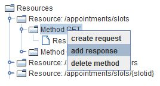

Response

Topic content
Configuration
For each method user can define corresponding response object containing information
about method response.
1.Right click on object and select option in order to create new response

2. Click on the created object to open a configuration panel for it
Configuring a method response
There are five configuration fields related to the Response object.
•Response - The description of the response.
•Media Type - defining the format of the method response.
•Message Type - defining the internal Message Type to use for the Response. But if in the configuration of the serializers you selected <configured type> this value may be used to create the correct content data.
•Result Code - Here the user can enter a comma separated list of allowed result codes for this response. At execution time the values in this field (if present) are used to out if the generated response is valid. You could e.g. declare that in case of success (Result code 200) the resulting media type should be JSON whereas in any other case the resulting media type should be HTML.
•Method parameters - defining the Response parameters. Only Header parameters are allowed for a response.